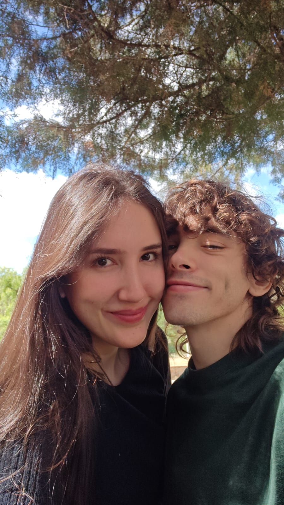
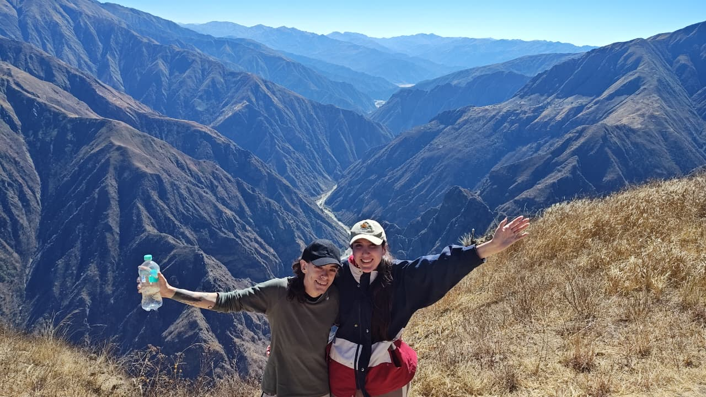
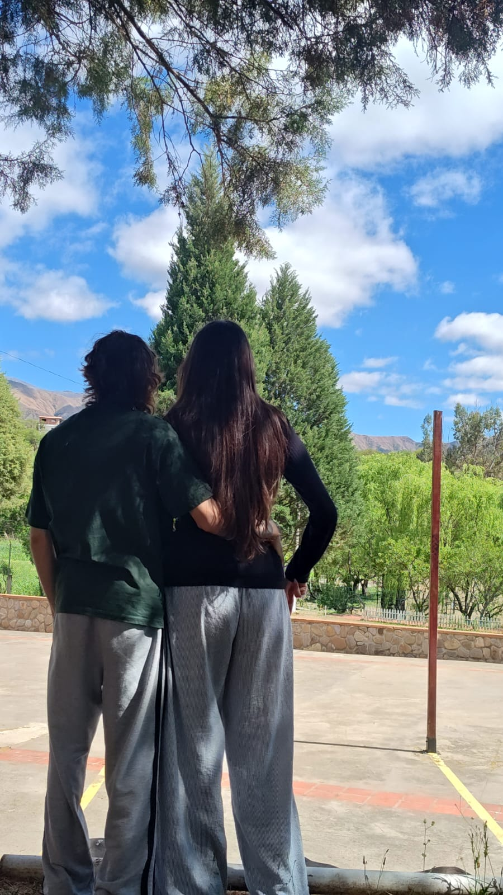
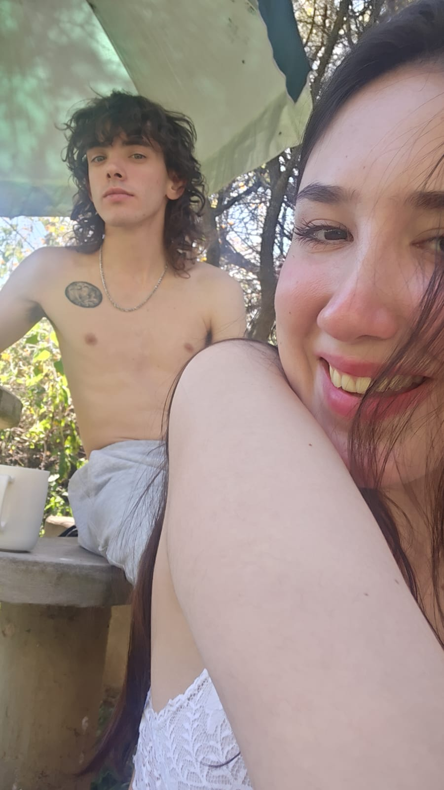
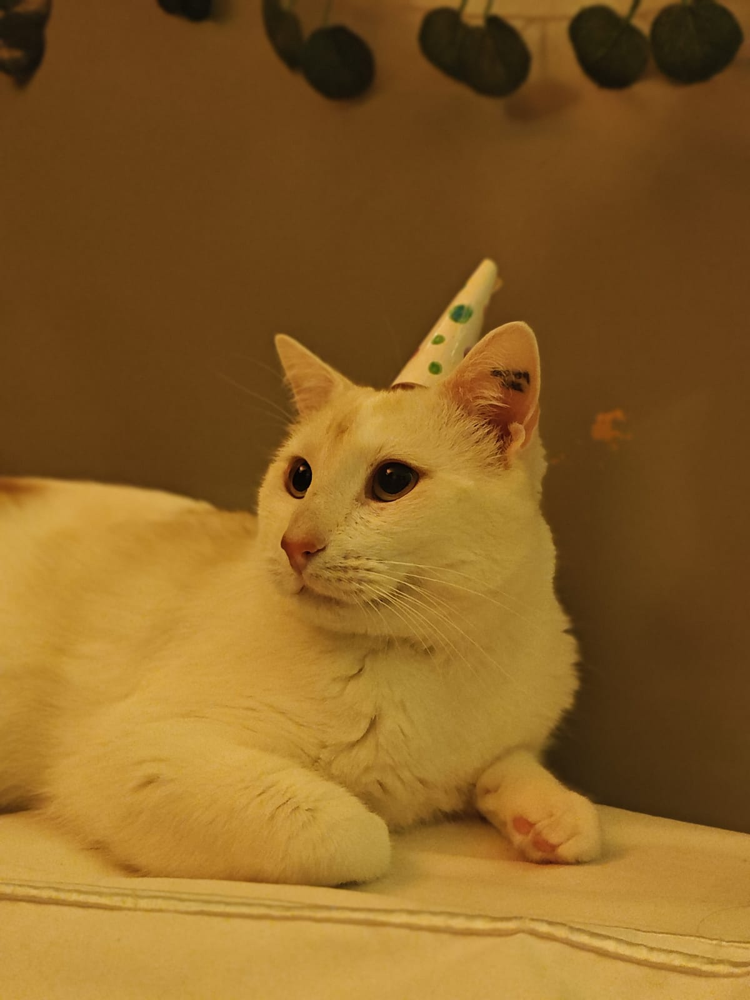
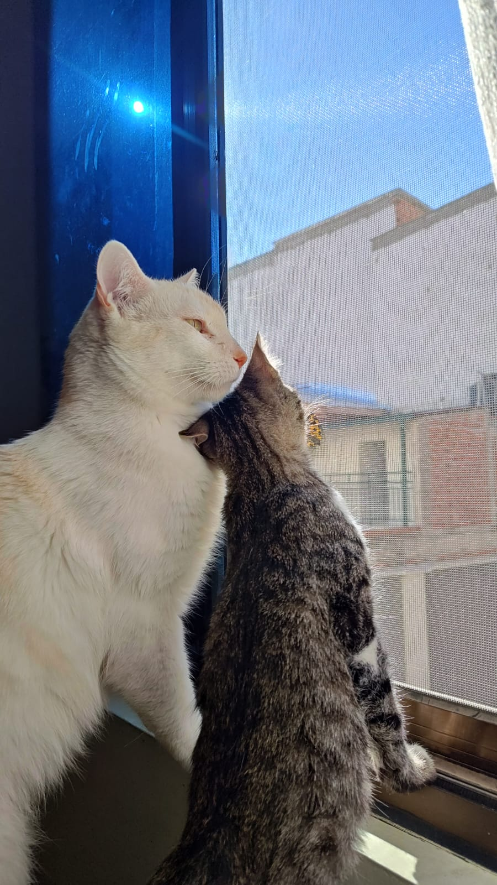
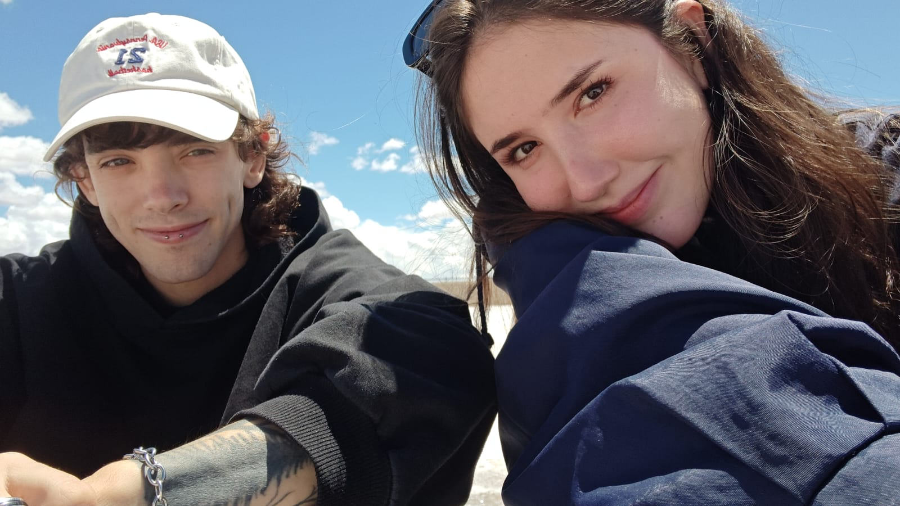
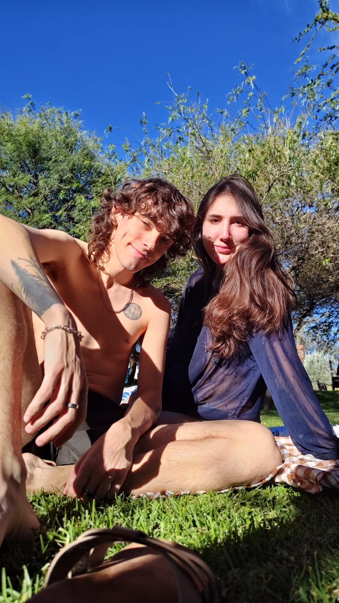
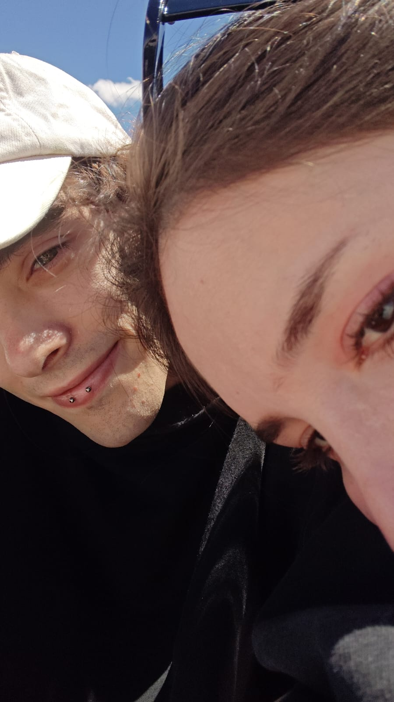

No sé cómo explicarte la importancia que tenés en mi vida, en mi día a día, en mi crecimiento personal, en mi manera de pensar, de sentir y de ver el mundo.
Muchas veces me decís que estás orgullosa de mí, de cómo reacciono ante las cosas, de cómo pienso, de mis actitudes, de la manera en la que veo la vida, pero creo que no te das cuenta de algo, y es que vos me ayudás a ser así cada día.
No porque antes de conocerte no fuera nadie, ni porque todo lo que soy dependa de vos, sino porque desde que estás en mi vida me ayudás a ser una mejor persona todos los días, me hacés querer crecer, aprender, entender y apreciar más las cosas. Me enseñás muchísimo, incluso cuando no te das cuenta de que lo estás haciendo, y no sé si alguna vez voy a encontrar las palabras suficientes para agradecerte eso.

Estos días, al verte mal de salud, sentí algo que me hizo darme cuenta todavía más de todo esto. Es como si de repente todo lo demás perdiera importancia, como si mi cabeza, mi cuerpo y todo mi ser solamente pudieran concentrarse en vos, en que estés bien, en cuidarte, en darte toda mi energía, todo mi apoyo y todo el amor que tengo para darte.
Y no es porque me olvide de mí o de mi propia vida, es porque sos una parte tan importante de ella que verte sufrir me hace entender, de golpe, la magnitud de lo que siento por vos.
Pero tampoco quiero que necesitemos pasar por momentos difíciles para darme cuenta de eso, porque la verdad es que lo siento todos los días.
Cuando te miro a los ojos, cuando te veo reír, cuando estás peleándome arriba mío y te miro mientras intentás no reírte, cuando solamente nos entendemos nosotros jugando con nuestras locuras, riéndonos, haciendo boludeces, pareciendo dos nenes, entiendo que el sentido de la vida está en esos momentos y en poder compartirlos con vos.
Y es algo que me resulta increíble, porque tantas veces me encuentro pensando en cuál es el propósito de mi vida, qué es lo que realmente me hace feliz, qué significa sentirse pleno, cómo encontrar esa felicidad que tantas veces parece que estamos buscando sin saber muy bien dónde. Me hago preguntas sobre la vida, sobre lo que somos, sobre qué estamos haciendo acá, sobre cómo aprovechar de verdad el tiempo que tenemos, y muchas veces me cuesta encontrar respuestas.
Pero después estoy con vos, te veo reír, te abrazo, te beso o simplemente me quedo mirándote a los ojos, y me doy cuenta de que toda esa felicidad, toda esa plenitud y todos esos motivos que intento encontrar tan seguido están ahí, en esos momentos a tu lado, donde realmente me siento completo.


A veces pienso en la inmensidad del universo, en todo lo que existe, en todo lo que todavía no conocemos, en cada átomo, en cada estrella, en todas esas cosas que me generan tanta curiosidad, y después te miro y me parece increíble que pueda encontrar tanta felicidad en algo tan sencillo como tu risa, tus abrazos, tus besos o simplemente en mirarte fijamente a los ojos.
Me cuesta muchísimo expresar todo esto en el día a día, incluso ahora, mientras escribo, siento que no termino de encontrar las palabras, que lo que estoy diciendo es apenas una parte de lo que realmente siento. Y quizás puedo escribirlo porque no te tengo enfrente, porque cuando te miro muchas veces lo único que quiero hacer es abrazarte, besarte y quedarme ahí, disfrutando de estar con vos.

Hay algo que también quiero que sepas. A veces pensás que soy aburrido, que no te doy bola cuando estás jugando con la chiqui, y quizás desde afuera parece eso, pero muchas veces en esos momentos estoy siendo inmensamente feliz.
Estoy mirándote y disfrutando de verte así, de verte jugar, de verte reír, de verte siendo vos. Y me pasa algo que no sé bien cómo explicar, porque por un lado intento estar presente, disfrutar de ese instante, de lo que está pasando justo ahí, pero al mismo tiempo a veces no puedo evitar imaginarnos en el futuro, con nuestros hijos, compartiendo esos mismos momentos, viéndote jugar con ellos, riéndonos juntos, sorprendiéndonos por las mismas boludeces de siempre.


Y después vuelvo a mirarte, ahí, jugando con los gatos, y me doy cuenta de que no necesito esperar a que llegue ese futuro para ser feliz, porque ya lo soy, ahora, con vos.
Y aunque no siempre me veas saltando de felicidad, aunque no me veas reírme a carcajadas o llorar de emoción, quiero que sepas que muchas veces estoy sintiendo todo eso por dentro, como ahora, mientras escribo esto y no puedo evitar llorar de felicidad, de amor y de agradecimiento, porque realmente me llenás el alma.

Sos la mujer de mis sueños, pero sobre todo sos la mujer de mi vida, y no tengo ninguna duda de eso.
Sos la persona con la que quiero seguir descubriendo lo increíble que es estar vivos, sorprendernos juntos por todo, por cada cosa que existe, por cada átomo del universo, por cada amanecer, por cada lluvia, por cada viento, por cada flor, por todo lo que somos capaces de sentir y experimentar.
Me hace inmensamente feliz pensar en todo lo que todavía nos queda por vivir, en los lugares que vamos a conocer, en todas las cosas que vamos a aprender, en las experiencias que todavía ni siquiera imaginamos, en verte cumplir tus sueños y poder compartir los míos con vos, en formar nuestra familia, en ver a nuestros hijos crecer y descubrir el mundo con esa misma curiosidad con la que nosotros intentamos mirarlo.
Pero también me hace feliz pensar en todos esos días en los que no pase absolutamente nada extraordinario, en estar en casa, cocinar juntos, jugar con los gatos, molestarnos, reírnos por cualquier estupidez, porque si hay algo que aprendí estando con vos es que no necesito que todos los días pase algo increíble para sentir que estoy viviendo una vida increíble.

Siempre alcanza
con tenerte al lado.
Sé que no somos perfectos, que a veces discutimos, que nos enojamos, que nos cuesta entendernos, que somos dos personas con nuestras propias formas de pensar, de sentir y de vivir las cosas, pero también sé que quiero seguir aprendiendo a amarte cada día mejor, entenderte incluso cuando me cueste, escucharte, acompañarte, cuidarte y seguir creciendo con vos.
No quiero que dejemos de ser quienes somos, quiero que sigamos descubriendo quiénes podemos llegar a ser juntos, sin perder nunca eso tan nuestro, esa manera de jugar, de reírnos, de mirarnos y entendernos sin decir una palabra, esa forma que tenemos de ser dos adultos y al mismo tiempo dos nenes descubriendo el mundo.
Porque en esos momentos encuentro algo que no sé si alguna vez voy a poder explicar del todo, encuentro paz, encuentro felicidad, encuentro todos esos motivos que tantas veces salgo a buscar en otros lugares, y me doy cuenta de que entre todas las cosas que me gustaría hacer, aprender, conocer y experimentar en esta vida, hay una de la que estoy completamente seguro, y es que quiero vivirlas con vos.
No sé cuánto tiempo tenemos en este mundo, no sé qué cosas nos esperan, qué dificultades vamos a tener que atravesar ni cuántas veces van a cambiar nuestros planes, pero sí sé que agradezco profundamente haberte conocido, agradezco cada segundo que puedo compartir con vos, agradezco que existas, que seas como sos, que me dejes conocerte cada día un poquito más y que me permitas ser parte de tu vida.
Y si pudiera pedir algo, no sería tener una vida perfecta, ni conseguir absolutamente todo lo que alguna vez soñé, sería que tengamos muchísimo tiempo para seguir viviendo todo esto, para seguir descubriendo, creciendo, jugando como dos nenes, sorprendiéndonos por las cosas más pequeñas y mirándonos a los ojos, encontrando ahí toda esa felicidad que a veces parece tan difícil de encontrar.

Muchas veces digo que, si creo en algo superior, lo llamaría universo, y hoy me doy cuenta de algo que quizás siempre sentí, pero nunca había sabido expresar.
Vos sos mi universo, y juntos somos el universo.
Sos el amor de mi vida, y qué suerte increíble tengo de poder vivirla con vos.
Con mucho cariño,
Ezequiel